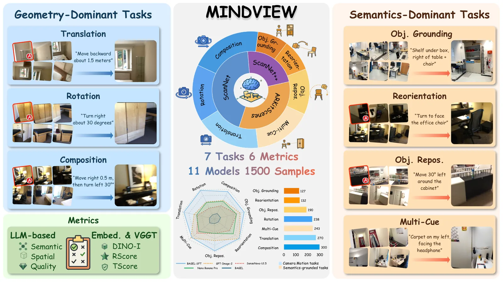
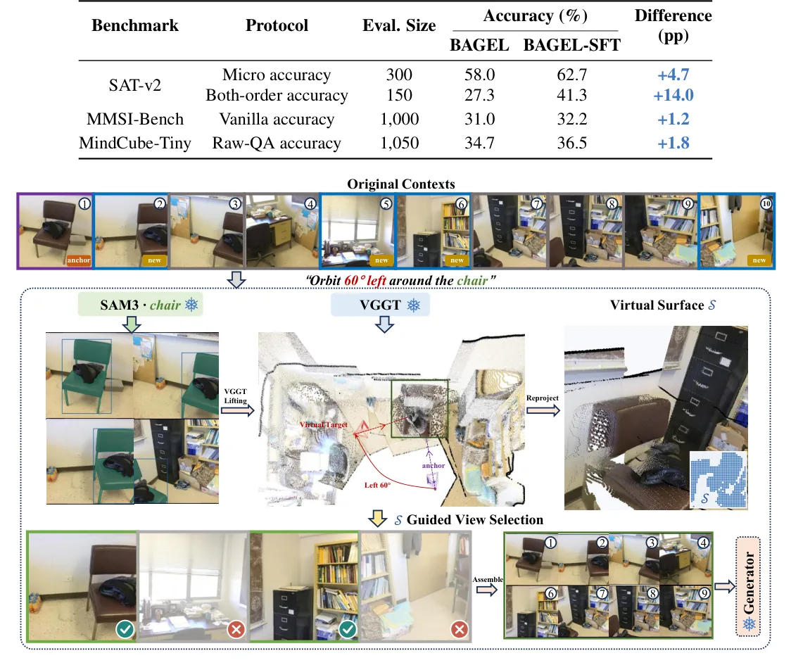
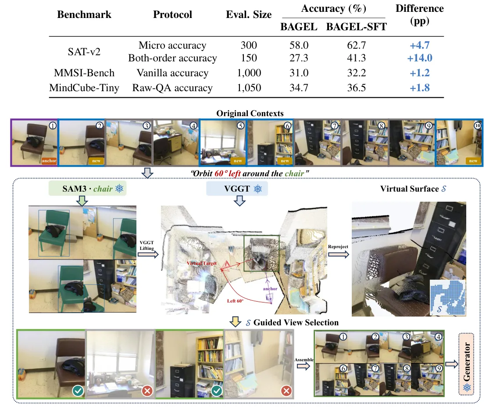
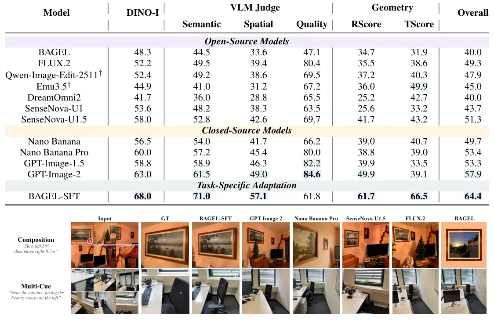

O Desafio da Inteligência Espacial Generativa
A inteligência espacial em modelos de visão computacional tem sido historicamente avaliada por meio de tarefas de compreensão, como perguntas e respostas baseadas em texto. No entanto, a geração de imagens que respeitam a consistência espacial é um problema distinto e mais complexo. O paper MindView, de pesquisadores de Tsinghua University, Shanghai Artificial Intelligence Laboratory e outras instituições, introduz um benchmark focado na inteligência espacial generativa multi-view. O objetivo é avaliar se modelos podem gerar uma nova vista de uma cena baseada em observações parciais e instruções em linguagem natural.
Diferente de benchmarks anteriores que focam em edição de imagens ou síntese de vistas com parâmetros de câmera explícitos, o MindView exige que o modelo infira a posição e orientação da câmera alvo a partir de pistas semânticas ou geométricas. Isso significa que o modelo não recebe apenas a direção para onde olhar, mas precisa entender relações espaciais, como 'virar para enfrentar a cadeira do escritório' ou 'mover-se para trás 1,5 metros'.
O benchmark é composto por 1.500 amostras extraídas de 513 cenas de três datasets de ambientes internos. Essas amostras são divididas em sete tarefas, agrupadas em duas famílias principais: tarefas dominadas pela geometria e tarefas dominadas pela semântica. Essa separação permite analisar se os modelos têm mais dificuldade com movimentos físicos da câmera ou com a interpretação de relações entre objetos.

A Arquitetura do Benchmark MindView
As sete tarefas do MindView são projetadas para testar capacidades específicas de raciocínio espacial. As tarefas de geometria incluem Translação (mover a câmera linearmente), Rotação (girar a câmera) e Composição (uma combinação ordenada de movimento e rotação). Por exemplo, uma instrução pode ser 'mover para a direita 0,5m, depois virar à esquerda 30 graus'. Essas tarefas exigem que o modelo mantenha a consistência geométrica rígida da cena.
Já as tarefas semânticas são mais abstratas. Elas incluem Grounding de Objetos (inferir o viewpoint a partir de relações como 'prateleira sob a caixa, à direita da mesa'), Reorientação Focada no Alvo (virar para enfrentar um objeto específico), Reposicionamento Centrado no Objeto (rotacionar ao redor de um móvel) e Inferência de Viewpoint Multi-Cue (usar múltiplas pistas, como 'tapete à minha esquerda, enfrentando o aquecedor').
Para avaliar a qualidade das imagens geradas, os autores propõem seis métricas complementares. Elas não se limitam à qualidade visual geral, mas medem a fidelidade do conteúdo, o alinhamento espacial, a qualidade de renderização e a consistência geométrica. Métricas como DINO-I avaliam a similaridade semântica, enquanto RScore e TScore avaliam a precisão rotacional e translacional da câmera inferida. Isso é crucial, pois uma imagem pode parecer bonita (alta qualidade de renderização) mas estar geometricamente incorreta.
Avaliação dos Geradores Existentes
O benchmark foi aplicado a onze geradores de imagem, incluindo modelos de código aberto como BAGEL, FLUX.2, Qwen-Image-Edit e Emu3.5, e modelos fechados como Nano Banana, GPT-Image-1.5 e GPT-Image-2. Os resultados revelam lacunas significativas na inteligência espacial desses modelos. O GPT-Image-2 obteve o melhor score geral entre os modelos existentes, com 57,9 pontos, mas mesmo ele apresenta falhas em tarefas específicas.
Um padrão recorrente foi observado: tarefas de Composição e Inferência Multi-Cue são as mais difíceis para a maioria dos modelos. Isso indica que, embora os geradores sejam bons em movimentos simples de câmera, eles lutam para integrar múltiplas restrições espaciais ou sequências de movimento. Além disso, há uma discrepância entre métricas de conteúdo e geometria. Por exemplo, o Nano Banana Pro tem alta fidelidade semântica, mas baixa precisão geométrica (RScore e TScore), sugerindo que ele 'desenha' a cena corretamente, mas na orientação errada.
Melhorando a Geração: Fine-tuning e MindCue
Para investigar se a performance pode ser melhorada, os autores realizaram um fine-tuning supervisionado (SFT) do modelo BAGEL no dataset de treino do MindView. O fine-tuning é o processo de ajustar os pesos de um modelo pré-treinado em uma tarefa específica. O BAGEL-SFT superou todos os modelos base em todas as sete tarefas, melhorando o score geral em 24,3 pontos. Isso demonstra que a tarefa é aprendível e que os modelos genéricos carecem de especialização em raciocínio espacial multi-view.
Além do fine-tuning, os autores propõem o MindCue, um método sem treinamento (training-free) para seleção de evidências. O problema identificado foi que, ao fornecer mais imagens de contexto, o modelo se perde. O MindCue atua como um seletor guiado por uma hipótese da vista alvo. Ele analisa quais das imagens de contexto são mais relevantes para a instrução dada, filtrando ruídos e melhorando a qualidade da entrada para o gerador.
O MindCue não apenas revertiu a queda de performance causada pelo contexto expandido, como também superou a linha de base com contexto padrão. Isso prova que a qualidade da evidência visual é tão importante quanto a quantidade. Ao focar nas imagens corretas, o modelo gera vistas mais consistentes, mesmo sem alterar seus pesos internos.

Transferência para Compreensão Espacial
Um achado interessante do paper é a relação entre geração e compreensão. O modelo BAGEL-SFT, treinado apenas para gerar imagens, também foi avaliado em benchmarks de compreensão espacial (como perguntas e respostas sobre a cena). O modelo treinado obteve scores mais altos em três benchmarks de compreensão sem nunca ter sido treinado nas anotações dessas tarefas.
Isso sugere que aprender a gerar vistas espacialmente consistentes força o modelo a desenvolver uma representação interna mais robusta da geometria da cena. A geração, portanto, não é apenas um fim em si mesma, mas uma ferramenta poderosa para melhorar a compreensão espacial dos modelos multimodais. Isso abre caminho para usar tarefas generativas como forma de regularização ou pré-treinamento para tarefas de entendimento.

Limitações e Conclusão
Apesar dos avanços, o paper reconhece limitações. O benchmark foca em ambientes internos, o que pode não generalizar perfeitamente para cenas externas complexas. Além disso, a avaliação depende de métricas automáticas e de LLMs, que podem não capturar todas as nuances da consistência espacial percebida por humanos.
Outra limitação é que o MindCue, embora eficaz, é um método de pós-processamento de entrada. A integração de mecanismos de atenção que aprendem a ponderar evidências durante o treinamento permanece como uma direção futura. O paper conclui que a inteligência espacial generativa multi-view é um campo imaturo, com grandes lacunas em tarefas de composição e inferência semântica, mas que oferece um caminho claro para avanços através de especialização de modelos e seleção inteligente de evidências.

O que fica
- O MindView avalia a geração de vistas a partir de instruções de linguagem, separando tarefas geométricas das semânticas.
- Modelos atuais falham em composições de movimento e inferência de viewpoints complexos, mesmo com alto score de qualidade.
- Aumentar o contexto de imagens de entrada piora a performance geral, indicando dificuldade de integração de evidências.
- Fine-tuning específico e o método MindCue melhoram significativamente a precisão espacial e a seleção de evidências.
Paper original: MindView: Benchmarking Generative Multi-View Spatial Intelligence
Comentários
Nenhum comentário ainda. Seja o primeiro.